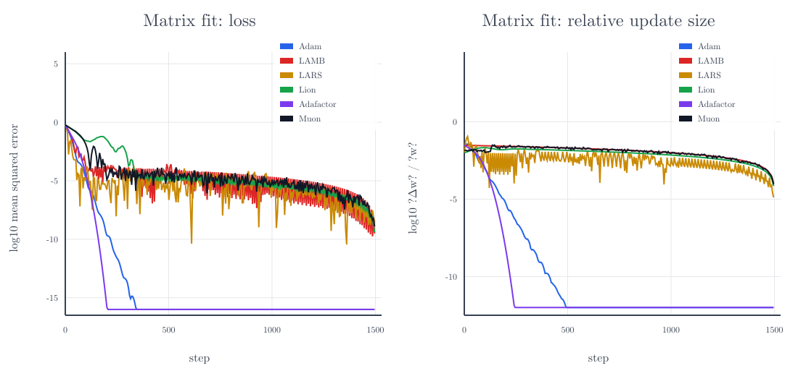
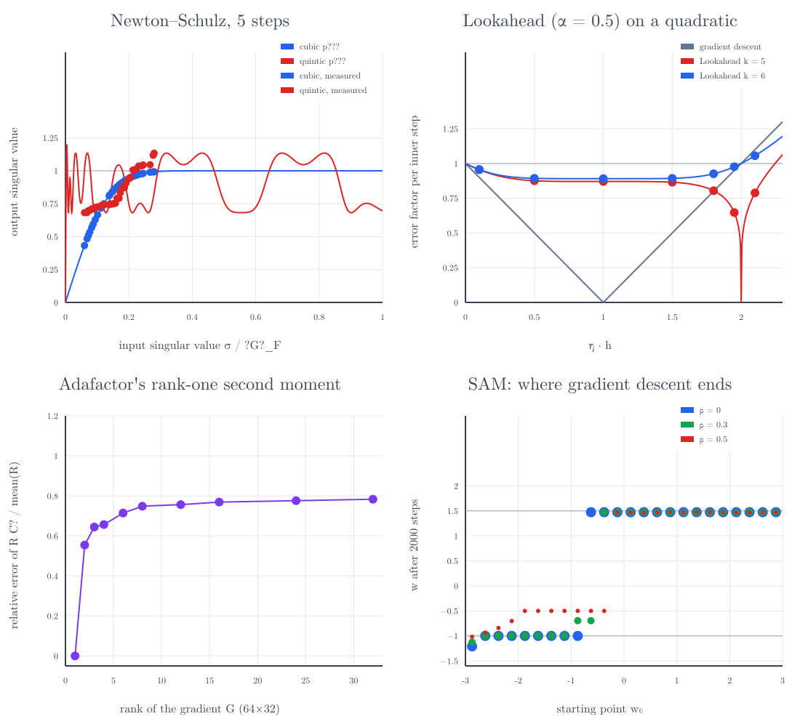
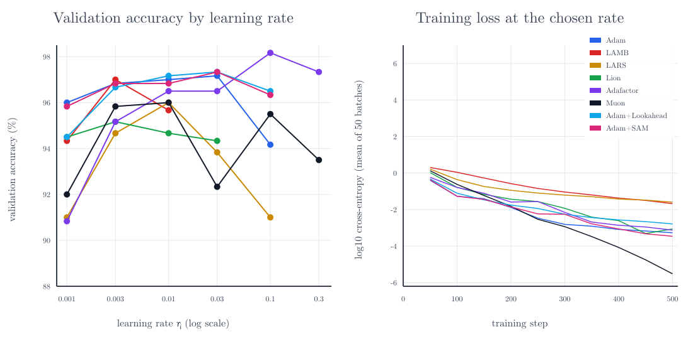

Advanced Optimizers: LAMB, LARS, Lion, Adafactor, Muon, Lookahead and SAM
Abstract
LAMB, LARS, Lion and Adafactor change the shape of an optimizer's update rather than its scale: per layer, per sign or through a factored second moment. This report checks the four built-in rules against their closed forms, to machine precision. It adds Muon, which orthogonalises each weight matrix's update by Newton–Schulz iteration, together with two wrappers that work with any optimizer: Lookahead and sharpness-aware minimisation (SAM). The theory checks are exact. Newton–Schulz maps each singular value through a fixed polynomial: the classical cubic converges to the orthogonal polar factor, while Muon's quintic stops at singular values between 0.68 and 1.13 after two steps. Lookahead's contraction on a quadratic equals \(1-\alpha+\alpha c^k\) to \(10^{-16}\); with an odd number of inner steps it converges even where gradient descent diverges. Adafactor's rank-one second moment is exact for a rank-one gradient, and its relative error is 0.55 already at rank two. On a loss with a sharp and a flat minimum, SAM does not move runs into the flat well. Instead, for large radii it creates a new stationary point at distance \(\rho\) from the sharp minimum. On the digits data, in a short 500-step sweep, every method reaches 95–98% validation accuracy at its best learning rate. Only Adafactor and Muon stay above 90% over the whole 300-fold range of rates, while LAMB, LARS and Lion collapse at the larger ones.
The problem
Adam and its relatives (see the report on adaptive optimizers) rescale each coordinate separately. Several later methods change the geometry of the update instead:
- LARS (You, Gitman and Ginsburg, 2017) and LAMB (You et al., 2020) scale each layer's update by the ratio of the weight norm to the update norm, so that every layer moves by the same relative amount. They were designed for very large batches.
- Lion (Chen et al., 2023), found by program search, moves every coordinate by exactly the learning rate in the direction of the sign of a momentum mix.
- Adafactor (Shazeer and Stern, 2018) stores only the row and column means of the squared gradients of a weight matrix, instead of a full second moment, to save memory.
- Muon (Jordan et al., 2024) replaces the momentum of each weight matrix by the nearest orthogonal matrix, computed approximately by a Newton–Schulz iteration.
Two further methods wrap any optimizer. Lookahead (Zhang et al., 2019) keeps slow weights that follow the optimizer's fast weights. SAM (Foret et al., 2021) evaluates the gradient at the worst point in a small neighbourhood, to favour minima whose surroundings are flat.
This report replaces the original example examples/nn/0_foundations/0.3_optimizers_and_training_loop/advanced_optimizers.cpp. That example checked LAMB's and LARS's relative update norms, Lion's use of the old momentum, Adafactor's factored moments on a rank-one squared gradient, the behaviour of all four with zero gradients, Adafactor's memory and a small matrix fit. All of that is kept.
Added are Muon, Lookahead, SAM and the Newton–Schulz iteration, in datamunge/nn/advanced_variants.hpp, together with checks of their theory and a dataset.
The method
Layer-wise trust ratios: LARS and LAMB
For a layer with weights \(w\) and gradient \(g\), LARS keeps a velocity
with trust coefficient \(\tau\). Without momentum and decay, a step moves the layer by exactly \(\eta\tau\lVert w\rVert\), a fixed fraction of its norm. LAMB applies the same idea to Adam: it computes Adam's direction \(d=\hat m/(\sqrt{\hat v}+\epsilon)+\lambda w\) and steps \(\eta\,d\,\lVert w\rVert/\lVert d\rVert\), so \(\lVert\Delta w\rVert=\eta\lVert w\rVert\).
Lion
Lion keeps one momentum \(m\) and updates
The sign uses the old momentum, mixed with the new gradient by \(\beta_1\), while the stored momentum uses \(\beta_2\). Without decay every coordinate with a nonzero mix moves by exactly \(\eta\), so \(\lVert\Delta w\rVert=\eta\sqrt d\) for \(d\) coordinates. Lion stores one slot per weight, half of Adam's two.
Adafactor
For an \(n\times m\) weight matrix, Adafactor keeps row means \(R_i\) and column means \(C_j\) of \(G\circ G\), each an exponential average with decay \(1-t^{-0.8}\), and estimates the second moment by the rank-one matrix
If \(G\circ G=ab^\top\) has rank one, then \(R=a\,\bar b\) and \(C=\bar a\,b\), and \(\hat V=ab^\top\) exactly. In general \(G\circ G\) is not of rank one. If \(G=\sum_{i=1}^ru_iv_i^\top\) has rank \(r\), then \(G\circ G=\sum_{i,j}(u_i\circ u_j)(v_i\circ v_j)^\top\), and since the terms for \((i,j)\) and \((j,i)\) are equal, its rank is at most \(r(r+1)/2\). The memory is \(n+m\) floats instead of \(nm\). The update \(G/\sqrt{\hat V}\) is divided by \(\max(1,\mathrm{RMS}/d)\) for a clipping threshold \(d\). By default the learning rate is capped at \(1/\sqrt t\) and multiplied by \(\max(\mathrm{RMS}(w),10^{-3})\).
Muon and Newton–Schulz orthogonalisation
Write the momentum of a weight matrix as \(M=U\Sigma V^\top\). Muon steps along the orthogonal factor \(UV^\top\), which keeps the singular vectors and sets every singular value to 1. The update then has the same size in every direction of the matrix. Bernstein and Newhouse (2024) show that this is steepest descent under the spectral norm. An SVD at every step is expensive. Muon uses instead an odd polynomial \(p(x)=ax+bx^3+cx^5\) applied to the matrix:
If \(X=U\Sigma V^\top\), then \((XX^\top)X=U\Sigma^3V^\top\), so one step maps every singular value \(\sigma\) to \(p(\sigma)\) and leaves \(U\) and \(V\) unchanged. Starting from \(X_0=M/\lVert M\rVert_F\), whose singular values lie in \((0,1]\), \(k\) steps give exactly \(U\,p^{(k)}(\Sigma/\lVert M\rVert_F)\,V^\top\).
The classical choice \(p(x)=\tfrac32x-\tfrac12x^3\) (Björck and Bowie, 1971) converges to 1 for every \(\sigma\in(0,\sqrt3)\), quadratically near 1, but grows small values only by a factor of 1.5 per step. Jordan's quintic \((3.4445,-4.7750,2.0315)\) grows them by 3.44 per step, at the price of not converging: the values end up oscillating around 1.
nn::newton_schulz_orthogonalize implements the iteration. nn::Muon keeps a Nesterov momentum \(m\leftarrow\mu m+g\), \(u=g+\mu m\), and steps \(w\leftarrow w-\eta\lambda w-\eta\sqrt{\max(1,n/m)}\,\mathrm{NS}_5(u)\). Parameters that are not matrices, such as biases, get the plain momentum update \(w\leftarrow w-\eta u\).
Lookahead
Lookahead keeps slow weights \(\phi\). Every \(k\) steps of the inner optimizer it sets \(\phi\leftarrow\phi+\alpha(\theta-\phi)\) and resets the fast weights \(\theta\) to \(\phi\). For gradient descent on \(\tfrac12hw^2\), each inner step multiplies the error by \(c=1-\eta h\). One outer cycle starts at \(\phi\), reaches \(c^k\phi\) and moves the slow weights to
The rate per inner step is \(|1-\alpha+\alpha c^k|^{1/k}\). For small \(\eta h\) it is about \(1-\alpha\eta h\), slower than gradient descent. For \(c\) near \(-1\), where gradient descent oscillates, an odd \(k\) gives \(c^k\approx-1\) and a factor near \(1-2\alpha\), which is 0 for \(\alpha=0.5\).
Sharpness-aware minimisation
SAM minimises \(\max_{\lVert\epsilon\rVert\le\rho}L(w+\epsilon)\). A first-order expansion gives the maximiser \(\epsilon=\rho\,g/\lVert g\rVert\) with \(g=\nabla L(w)\), and SAM uses \(\nabla L(w+\epsilon)\), treating \(\epsilon\) as a constant. nn::sam_gradients computes this gradient over all parameters jointly, at the cost of two forward and backward passes, and returns it for any optimizer's step().
The first-order maximiser is not the true maximiser. In one dimension \(\epsilon=\rho\,\mathrm{sign}(L'(w))\), so SAM looks only uphill, a distance \(\rho\) away.
Simple examples
Closed-form checks, memory and a matrix fit
The program repeats the original checks: one LAMB and one LARS step from \(w=(3,4)\) with gradient \((1,-2)\), learning rate 0.1 and trust coefficient 0.1; two Lion steps with gradients 10 and \(-0.85\); one clipped Adafactor step on a \(2\times3\) matrix with the rank-one squared gradient \((1,2,3;2,4,6)^{\circ2}\); zero gradients on a scalar, a vector and a rank-3 tensor; and the slot memory of a \(256\times128\) matrix. It adds a check of Lion's update norm over 20 random steps. Finally it fits a \(3\times4\) matrix by mean squared error for 1500 steps, with the learning rate decayed linearly to zero, using each method and also Adam and Muon.
#include <dm/dm.hpp>
namespace nn = dm::nn;
using nn::Tensor;
using Kind = nn::OptimizerKind;
using dm::graphics::RGB;
const auto F64 = nn::DType::Float64;
Tensor vec(std::vector<double> v, nn::Shape s) { return nn::from_vector(v, s); }
Tensor gauss(std::int64_t r, std::int64_t c, std::uint64_t seed) {
std::mt19937_64 rng(seed);
std::normal_distribution<double> N;
std::vector<double> v(static_cast<std::size_t>(r * c));
for (auto& x : v) x = N(rng);
return nn::from_vector(v, {r, c});
}
Tensor slot(const nn::Optimizer& o, const std::string& name) {
for (const auto& [k, v] : o.state()) if (k == name) return v;
throw std::runtime_error("no slot " + name);
}
long long slot_floats(const nn::Optimizer& o) {
long long n = 0;
for (const auto& [k, v] : o.state()) if (k != "step" && k != "nadam_product") n += v.numel();
return n;
}
int main() {
std::filesystem::create_directories("build");
// 1. One step from w = (3, 4), gradient (1, -2), learning rate 0.1: the relative update norm of LAMB is the learning
// rate itself, that of LARS the learning rate times the trust coefficient 0.1.
std::print("| check | computed | expected |\n| :--- | ---: | ---: |\n");
for (auto kind : {Kind::Lamb, Kind::Lars}) {
Tensor w = vec({3, 4}, {2});
w.requires_grad_();
nn::OptimizerConfig cfg;
cfg.kind = kind, cfg.momentum = 0, cfg.trust_coefficient = 0.1;
nn::Optimizer o({w}, 0.1, cfg);
o.step({vec({1, -2}, {2})});
const auto v = w.to_vector<double>();
std::print("| {} ‖Δw‖/‖w‖ after one step | {:.6f} | {} |\n", nn::optimizer_name(kind), std::hypot(v[0] - 3, v[1] - 4) / 5, kind == Kind::Lamb ? "0.1" : "0.01");
}
// 2. Lion picks the sign from the OLD momentum mixed with the new gradient (β1 = 0.9) and stores momentum with β2.
{
Tensor w = vec({1}, {1});
w.requires_grad_();
nn::OptimizerConfig cfg;
cfg.kind = Kind::Lion, cfg.beta2 = 0.99;
nn::Optimizer o({w}, 0.1, cfg);
for (double g : {10.0, -0.85}) o.step({vec({g}, {1})});
std::print("| Lion w after gradients 10 then −0.85 | {:.6f} | 0.8 |\n", w.item());
std::print("| Lion stored momentum | {:.6f} | 0.0905 |\n", slot(o, "m/0").item());
// Every Lion step moves every coordinate by exactly the learning rate, so ‖Δw‖ = η √d.
Tensor W = gauss(16, 8, 3);
W.requires_grad_();
nn::Optimizer ol({W}, 0.01, cfg);
double worst = 0;
for (int t = 0; t < 20; ++t) {
const Tensor before = W.detach().clone();
ol.step({gauss(16, 8, 100 + t)});
worst = std::max(worst, std::abs(std::sqrt(nn::sum(nn::square(W.detach() - before)).item()) - 0.01 * std::sqrt(128.0)));
}
std::print("| Lion: largest deviation of ‖Δw‖ from η√d over 20 random steps (16×8) | {:.1e} | 0 |\n", worst);
}
// 3. Adafactor on a 2×3 matrix with the rank-one squared gradient G∘G = r c^T: the factored second moment is exact.
{
Tensor w = nn::ones({2, 3}, F64);
w.requires_grad_();
nn::OptimizerConfig cfg;
cfg.kind = Kind::Adafactor, cfg.scale_parameter = cfg.relative_step = false, cfg.update_clip = 0.5;
nn::Optimizer o({w}, 0.1, cfg);
o.step({vec({1, 2, 3, 2, 4, 6}, {2, 3})});
const auto wv = w.to_vector<double>(), row = slot(o, "row/0").to_vector<double>(), col = slot(o, "col/0").to_vector<double>();
std::print("| Adafactor weights after one clipped step (all six) | {:.6f} … {:.6f} | 0.95 |\n", *std::ranges::min_element(wv), *std::ranges::max_element(wv));
std::print("| Adafactor row moments | {:.6f}, {:.6f} | 14/3, 56/3 |\n", row[0], row[1]);
std::print("| Adafactor column moments | {:.4f}, {:.4f}, {:.4f} | 2.5, 10, 22.5 |\n", col[0], col[1], col[2]);
std::print("| Adafactor slot floats for a 2×3 matrix | {} | 5 |\n", slot_floats(o));
}
// 4. Zero gradients on a scalar, a vector and a rank-3 tensor keep every method finite; slot memory of a 256×128 matrix.
{
int finite = 0, total = 0;
for (auto kind : {Kind::Lamb, Kind::Lars, Kind::Lion, Kind::Adafactor})
for (const nn::Shape& shape : {nn::Shape{}, nn::Shape{3}, nn::Shape{2, 3, 4}}) {
Tensor w = nn::zeros(shape, F64);
w.requires_grad_();
nn::OptimizerConfig cfg;
cfg.kind = kind;
nn::Optimizer o({w}, 0.01, cfg);
for (int t = 0; t < 3; ++t) o.step({nn::zeros_like(w)});
bool ok = true;
for (double v : w.to_vector<double>()) ok = ok && v == 0.0;
finite += ok, ++total;
}
std::print("| cases with zero gradients that stay exactly at zero | {} of {} | 12 of 12 |\n", finite, total);
for (auto kind : {Kind::Adam, Kind::Lamb, Kind::Lars, Kind::Lion, Kind::Adafactor}) {
Tensor w = nn::zeros({256, 128}, F64);
w.requires_grad_();
nn::OptimizerConfig cfg;
cfg.kind = kind;
nn::Optimizer o({w}, 0.01, cfg);
o.step({nn::ones_like(w)});
std::print("| {} slot floats for a 256×128 matrix | {} | |\n", nn::optimizer_name(kind), slot_floats(o));
}
}
// 5. Fit a 3×4 matrix to a target by mean squared error, 1500 steps, learning rate decayed linearly to zero. Muon and
// Adam are added for comparison.
std::vector<double> tv(12);
for (int i = 0; i < 12; ++i) tv[i] = 0.3 + 0.5 * std::sin(i);
const Tensor target = vec(tv, {3, 4});
struct Run { std::string name; RGB color; double lr; std::vector<double> loss, rel; long long slots; };
std::vector<Run> runs{{"Adam", {37, 99, 235}, 0.03, {}, {}, 0}, {"LAMB", {220, 38, 38}, 0.03, {}, {}, 0}, {"LARS", {202, 138, 4}, 0.1, {}, {}, 0},
{"Lion", {22, 163, 74}, 0.01, {}, {}, 0}, {"Adafactor", {124, 58, 237}, 0.03, {}, {}, 0}, {"Muon", {17, 24, 39}, 0.03, {}, {}, 0}};
const int steps = 1500;
std::print("\n| method | initial η | MSE after 100 steps | after 500 | after 1500 | persistent slot floats |\n| :--- | ---: | ---: | ---: | ---: | ---: |\n");
for (auto& run : runs) {
Tensor w = nn::ones({3, 4}, F64);
w.requires_grad_();
auto loss_of = [&] { return nn::mean(nn::square(w - target)); };
std::shared_ptr<nn::Optimizer> o;
std::shared_ptr<nn::Muon> mu;
if (run.name == "Muon") {
mu = std::make_shared<nn::Muon>(std::vector<Tensor>{w}, run.lr);
run.slots = 12;
} else {
nn::OptimizerConfig cfg;
cfg.kind = run.name == "Adam" ? Kind::Adam : run.name == "LAMB" ? Kind::Lamb : run.name == "LARS" ? Kind::Lars : run.name == "Lion" ? Kind::Lion : Kind::Adafactor;
cfg.trust_coefficient = 0.1;
if (cfg.kind == Kind::Lion) cfg.beta2 = 0.99;
o = std::make_shared<nn::Optimizer>(std::vector<Tensor>{w}, run.lr, cfg);
}
std::vector<double> at;
for (int t = 0; t < steps; ++t) {
const double lr = run.lr * (1 - t / 1500.0);
const Tensor before = w.detach().clone();
if (mu) mu->set_learning_rate(lr), mu->minimize(loss_of());
else o->set_learning_rate(lr), o->minimize(loss_of());
const double l = loss_of().item();
run.loss.push_back(std::log10(std::max(l, 1e-16)));
run.rel.push_back(std::log10(std::max(std::sqrt(nn::sum(nn::square(w.detach() - before)).item() / nn::sum(nn::square(before)).item()), 1e-12)));
if (t + 1 == 100 || t + 1 == 500 || t + 1 == 1500) at.push_back(l);
}
if (o) run.slots = slot_floats(*o);
std::print("| {} | {} | {:.3g} | {:.3g} | {:.3g} | {} |\n", run.name, run.lr, at[0], at[1], at[2], run.slots);
}
auto fig = dm::graphics::RLayout::create(1, 2);
for (int panel = 0; panel < 2; ++panel) {
auto pl = dm::graphics::RPlot::create();
for (const auto& run : runs) {
std::vector<double> xs, ys;
for (int t = 0; t < steps; t += 5) xs.push_back(t + 1), ys.push_back(panel == 0 ? run.loss[t] : run.rel[t]);
pl.lines(xs, ys, run.name, run.color, 2);
}
if (panel == 0) pl.x_limits(0, 1530).y_limits(-16.5, 6).title("Matrix fit: loss").x_label("step").y_label("log10 mean squared error");
else pl.x_limits(0, 1530).y_limits(-12.5, 4.5).title("Matrix fit: relative update size").x_label("step").y_label("log10 ‖Δw‖ / ‖w‖");
fig.add(pl);
}
fig.size(1100, 520).fit_panels();
fig.save("build/advanced_basics.svg");
}| check | computed | expected |
|---|---|---|
| LAMB ‖Δw‖/‖w‖ after one step | 0.100000 | 0.1 |
| LARS ‖Δw‖/‖w‖ after one step | 0.010000 | 0.01 |
| Lion w after gradients 10 then −0.85 | 0.800000 | 0.8 |
| Lion stored momentum | 0.090500 | 0.0905 |
| Lion: largest deviation of ‖Δw‖ from η√d over 20 random steps (16×8) | 1.1e-16 | 0 |
| Adafactor weights after one clipped step (all six) | 0.950000 … 0.950000 | 0.95 |
| Adafactor row moments | 4.666667, 18.666667 | 14/3, 56/3 |
| Adafactor column moments | 2.5000, 10.0000, 22.5000 | 2.5, 10, 22.5 |
| Adafactor slot floats for a 2×3 matrix | 5 | 5 |
| cases with zero gradients that stay exactly at zero | 12 of 12 | 12 of 12 |
| Adam slot floats for a 256×128 matrix | 65536 | |
| LAMB slot floats for a 256×128 matrix | 65536 | |
| LARS slot floats for a 256×128 matrix | 32768 | |
| Lion slot floats for a 256×128 matrix | 32768 | |
| Adafactor slot floats for a 256×128 matrix | 384 |
| method | initial η | MSE after 100 steps | after 500 | after 1500 | persistent slot floats |
|---|---|---|---|---|---|
| Adam | 0.03 | 1.51e-05 | 1.32e-23 | 1.87e-33 | 24 |
| LAMB | 0.03 | 8.42e-05 | 0.000106 | 8.18e-11 | 24 |
| LARS | 0.1 | 2.81e-05 | 7.51e-06 | 2.12e-09 | 12 |
| Lion | 0.01 | 0.0269 | 3.37e-05 | 9.96e-11 | 12 |
| Adafactor | 0.03 | 3.62e-05 | 0 | 0 | 7 |
| Muon | 0.03 | 0.0116 | 1.05e-05 | 2.74e-10 | 12 |

All the original checks hold. LAMB's relative update norm is 0.100000 and LARS's 0.010000. Lion ends at \(w=0.8\) with stored momentum 0.0905, and its update norm equals \(\eta\sqrt d\) to \(1.1\times10^{-16}\). Adafactor's six weights are all 0.95, its row moments 14/3 and 56/3 and its column moments 2.5, 10 and 22.5. All 12 zero-gradient cases stay exactly at zero. For a \(256\times128\) matrix, Adafactor stores 384 floats against 65536 for Adam and LAMB and 32768 for LARS and Lion.
The matrix fit separates two groups. Adam and Adafactor shrink their steps as the gradient shrinks: Adam's loss is \(1.3\times10^{-23}\) after 500 steps and Adafactor's exactly 0. LAMB, LARS, Lion and Muon take steps of a fixed size relative to the weights, as their update rules prescribe, so they cannot settle while the learning rate is large. After 500 steps their losses are between \(7.5\times10^{-6}\) and \(1.1\times10^{-4}\), LAMB's higher than after 100 steps. They reach \(2.1\times10^{-9}\) (LARS) to \(8.2\times10^{-11}\) (LAMB) only because the learning rate decays to zero. All six end below the original example's threshold of \(10^{-5}\).
Checking the theory
Newton–Schulz, Lookahead, Adafactor's factorisation and SAM
The program applies both Newton–Schulz polynomials to a \(64\times32\) Gaussian matrix for 1 to 20 steps. It compares the singular values with \(p^{(k)}\) and the result with the exact polar factor \(UV^\top\) from the SVD. It runs gradient descent with Lookahead (\(\alpha=0.5\), \(k=5\) and 6) on \(\tfrac12hw^2\) for six outer cycles and compares the rate with the formula. It takes one Adafactor step on \(64\times32\) gradients of rank 1 to 32 and compares \(\hat V\) built from the library's slots with \(G\circ G\). Finally, it runs SAM with gradient descent (\(\eta=0.01\), 2000 steps) from 24 evenly spaced starting points, for five radii \(\rho\), on \([-3,3]\) on the loss
which has a deep, sharp well at \(w=-1\) and a shallower, wide one at \(w=1.5\).
#include <dm/dm.hpp>
namespace nn = dm::nn;
using nn::Tensor;
using Kind = nn::OptimizerKind;
using dm::graphics::RGB;
const auto F64 = nn::DType::Float64;
Tensor gauss(std::int64_t r, std::int64_t c, std::uint64_t seed) {
std::mt19937_64 rng(seed);
std::normal_distribution<double> N;
std::vector<double> v(static_cast<std::size_t>(r * c));
for (auto& x : v) x = N(rng);
return nn::from_vector(v, {r, c});
}
Tensor slot(const nn::Optimizer& o, const std::string& name) {
for (const auto& [k, v] : o.state()) if (k == name) return v;
throw std::runtime_error("no slot " + name);
}
int main() {
std::filesystem::create_directories("build");
auto fig = dm::graphics::RLayout::create(2, 2);
// (a) Newton–Schulz on a 64×32 Gaussian matrix: singular values of the output after k steps, and the distance to the
// exact polar factor U V^T from the SVD.
const Tensor G = gauss(64, 32, 7);
const auto d = nn::svd(G);
const Tensor polar = nn::matmul(d.u, d.v, false, true);
const auto s = d.s.to_vector<double>();
const double fro = std::sqrt(nn::sum(nn::square(G)).item());
std::print("64×32 Gaussian matrix: σ_max/‖G‖_F = {:.4f}, σ_min/‖G‖_F = {:.4f}.\n\n", s.front() / fro, s.back() / fro);
std::print("| steps k | cubic: σ range of the output | cubic: ‖X − UVᵀ‖_F/‖UVᵀ‖_F | quintic: σ range | quintic: ‖X − UVᵀ‖_F/‖UVᵀ‖_F |\n| ---: | :--- | ---: | :--- | ---: |\n");
const double pnorm = std::sqrt(nn::sum(nn::square(polar)).item());
for (int k : {1, 2, 3, 5, 8, 12, 20}) {
std::print("| {} |", k);
for (auto c : {nn::NewtonSchulzCoefficients::cubic(), nn::NewtonSchulzCoefficients::quintic()}) {
const Tensor X = nn::newton_schulz_orthogonalize(G, k, c);
const auto sx = nn::svd(X).s.to_vector<double>();
std::print(" {:.3f} – {:.3f} | {:.2e} |", *std::ranges::min_element(sx), *std::ranges::max_element(sx), std::sqrt(nn::sum(nn::square(X - polar)).item()) / pnorm);
}
std::print("\n");
}
{
auto pl = dm::graphics::RPlot::create();
auto iterate = [](double x, int k, nn::NewtonSchulzCoefficients c) {
for (int i = 0; i < k; ++i) x = c.a * x + c.b * x * x * x + c.c * x * x * x * x * x;
return x;
};
std::vector<double> xs, yc, yq;
for (double x = 0; x <= 1.0001; x += 0.0005) xs.push_back(x), yc.push_back(iterate(x, 5, nn::NewtonSchulzCoefficients::cubic())), yq.push_back(iterate(x, 5, nn::NewtonSchulzCoefficients::quintic()));
std::vector<double> px, pc, pq;
const auto sc = nn::svd(nn::newton_schulz_orthogonalize(G, 5, nn::NewtonSchulzCoefficients::cubic())).s.to_vector<double>();
const auto sq = nn::svd(nn::newton_schulz_orthogonalize(G, 5)).s.to_vector<double>();
for (std::size_t i = 0; i < s.size(); ++i) px.push_back(s[i] / fro), pc.push_back(sc[i]), pq.push_back(sq[i]);
pl.lines(xs, yc, "cubic p⁽⁵⁾", RGB{37, 99, 235}, 2).lines(xs, yq, "quintic p⁽⁵⁾", RGB{220, 38, 38}, 2)
.points(px, pc, "cubic, measured", RGB{37, 99, 235}, 5).points(px, pq, "quintic, measured", RGB{220, 38, 38}, 5)
.abline_h(1.0, RGB{148, 163, 184}, 1)
.x_limits(0, 1).y_limits(0, 1.9).y_ticks({0, 0.25, 0.5, 0.75, 1.0, 1.25}, {"0", "0.25", "0.5", "0.75", "1", "1.25"})
.title("Newton–Schulz, 5 steps").x_label("input singular value σ / ‖G‖_F").y_label("output singular value");
fig.add(pl);
}
// (b) Lookahead around gradient descent on 0.5 h w²: per-inner-step rate |1 − α + α c^k|^(1/k) with c = 1 − η h,
// against |c| for plain gradient descent. Points: measured with the library over 6 outer cycles.
{
auto pl = dm::graphics::RPlot::create();
std::vector<double> xs, gd, l5, l6;
for (double eh = 0.005; eh <= 2.3; eh += 0.005) {
const double c = 1 - eh;
xs.push_back(eh), gd.push_back(std::abs(c));
l5.push_back(std::pow(std::abs(0.5 + 0.5 * std::pow(c, 5)), 0.2));
l6.push_back(std::pow(std::abs(0.5 + 0.5 * std::pow(c, 6)), 1.0 / 6));
}
std::vector<double> mx, m5, m6;
double worst = 0;
std::print("\nLookahead (α = 0.5) around gradient descent on 0.5·h·w², rate per inner step:\n\n| η·h | gradient descent | k = 5 formula | k = 5 measured | k = 6 formula | k = 6 measured |\n| ---: | ---: | ---: | ---: | ---: | ---: |\n");
for (double eh : {0.1, 0.5, 1.0, 1.5, 1.8, 1.95, 2.1}) {
std::vector<double> rates;
for (int k : {5, 6}) {
Tensor w = nn::from_vector(std::vector<double>{1.0}, {1});
w.requires_grad_();
nn::OptimizerConfig cfg;
cfg.kind = Kind::Sgd;
nn::Optimizer inner({w}, eh, cfg);
nn::Lookahead la({w}, k, 0.5);
for (int i = 0; i < 6 * k; ++i) inner.step({w.detach()}), la.after_step();
rates.push_back(std::pow(std::abs(w.item()), 1.0 / (6 * k)));
}
const double c = 1 - eh, f5 = std::pow(std::abs(0.5 + 0.5 * std::pow(c, 5)), 0.2), f6 = std::pow(std::abs(0.5 + 0.5 * std::pow(c, 6)), 1.0 / 6);
worst = std::max({worst, std::abs(rates[0] - f5), std::abs(rates[1] - f6)});
std::print("| {} | {:.4f} | {:.4f} | {:.4f} | {:.4f} | {:.4f} |\n", eh, std::abs(c), f5, rates[0], f6, rates[1]);
mx.push_back(eh), m5.push_back(rates[0]), m6.push_back(rates[1]);
}
std::print("\nLargest difference between measured and formula: {:.1e}.\n", worst);
pl.lines(xs, gd, "gradient descent", RGB{100, 116, 139}, 2).lines(xs, l5, "Lookahead k = 5", RGB{220, 38, 38}, 2).lines(xs, l6, "Lookahead k = 6", RGB{37, 99, 235}, 2)
.points(mx, m5, RGB{220, 38, 38}, 6).points(mx, m6, RGB{37, 99, 235}, 6)
.abline_h(1.0, RGB{148, 163, 184}, 1)
.x_limits(0, 2.3).y_limits(0, 1.8).y_ticks({0, 0.25, 0.5, 0.75, 1.0, 1.25}, {"0", "0.25", "0.5", "0.75", "1", "1.25"})
.title("Lookahead (α = 0.5) on a quadratic").x_label("η · h").y_label("error factor per inner step");
fig.add(pl);
}
// (c) Adafactor's factored second moment R Cᵀ / mean(R) against G∘G for 64×32 gradients of rank r. After the first step
// the slots hold exactly the row and column means of G∘G (+1e-30).
{
std::print("\n| rank of G | rank of G∘G (numerical) | relative error ‖V̂ − G∘G‖_F / ‖G∘G‖_F |\n| ---: | ---: | ---: |\n");
std::vector<double> rx, ry;
for (int r : {1, 2, 3, 4, 6, 8, 12, 16, 24, 32}) {
Tensor g = nn::matmul(gauss(64, r, 100 + r), gauss(r, 32, 200 + r));
Tensor w = nn::zeros({64, 32}, F64);
w.requires_grad_();
nn::OptimizerConfig cfg;
cfg.kind = Kind::Adafactor;
nn::Optimizer o({w}, 0.01, cfg);
o.step({g});
const Tensor R = nn::reshape(slot(o, "row/0"), {64, 1}), C = nn::reshape(slot(o, "col/0"), {1, 32});
const Tensor V = nn::matmul(R, C) / nn::mean(R), V2 = nn::square(g);
const double err = std::sqrt(nn::sum(nn::square(V - V2)).item() / nn::sum(nn::square(V2)).item());
const auto sv = nn::svd(V2).s.to_vector<double>();
int rank = 0;
for (double x : sv) rank += x > 1e-10 * sv[0];
std::print("| {} | {} | {:.2e} |\n", r, rank, err);
rx.push_back(r), ry.push_back(err);
}
auto pl = dm::graphics::RPlot::create();
pl.lines(rx, ry, RGB{124, 58, 237}, 2).points(rx, ry, RGB{124, 58, 237}, 6)
.x_limits(0, 33).y_limits(-0.05, 1.2).title("Adafactor's rank-one second moment").x_label("rank of the gradient G (64×32)").y_label("relative error of R Cᵀ / mean(R)");
fig.add(pl);
}
// (d) SAM on a 1-D loss with a sharp deep well at w = −1 and a wide shallow one at w = 1.5. 24 starts on [−3, 3],
// 2000 gradient-descent steps (η = 0.01) on the SAM gradients for several radii ρ.
auto L = [](const Tensor& w) {
return nn::sum(-1.0 * nn::exp(-1.0 * nn::square(w + 1.0) / (2 * 0.08 * 0.08)) - 0.8 * nn::exp(-1.0 * nn::square(w - 1.5) / (2 * 0.6 * 0.6)) + 0.02 * nn::square(w));
};
auto Ld = [&](double x) { return L(nn::from_vector(std::vector<double>{x}, {1})).item(); };
std::print("\nLoss at the sharp minimum ≈ {:.4f}, at the flat one ≈ {:.4f}.\n\n| ρ | flat well (w within 0.5 of 1.5) | sharp well (w within 0.3 of −1, not at −1 + ρ) | at w = −1 + ρ (within 0.01) | elsewhere |\n| ---: | ---: | ---: | ---: | ---: |\n", Ld(-1.0), Ld(1.5));
const std::vector<double> radii{0.0, 0.2, 0.3, 0.5, 0.7};
std::vector<std::vector<double>> finals(radii.size());
std::vector<double> starts;
for (int i = 0; i < 24; ++i) starts.push_back(-3.0 + 6.0 * (i + 0.5) / 24);
for (std::size_t r = 0; r < radii.size(); ++r) {
const double rho = radii[r];
int flat = 0, sharp = 0, shadow = 0, other = 0;
for (double w0 : starts) {
Tensor w = nn::from_vector(std::vector<double>{w0}, {1});
w.requires_grad_();
nn::OptimizerConfig cfg;
cfg.kind = Kind::Sgd;
nn::Optimizer o({w}, 0.01, cfg);
for (int t = 0; t < 2000; ++t) o.step(nn::sam_gradients({w}, [&] { return L(w); }, rho).gradients);
const double x = w.item();
finals[r].push_back(x);
if (std::abs(x - 1.5) < 0.5) ++flat;
else if (rho > 0 && std::abs(x - (-1 + rho)) < 0.01) ++shadow;
else if (std::abs(x + 1) < 0.3) ++sharp;
else ++other;
}
std::print("| {} | {} | {} | {} | {} |\n", rho, flat, sharp, shadow, other);
}
{
auto pl = dm::graphics::RPlot::create();
const std::vector<std::size_t> shown{0, 2, 3};
const std::vector<RGB> cols{{37, 99, 235}, {22, 163, 74}, {220, 38, 38}};
const std::vector<double> sizes{7, 5, 3};
for (std::size_t j = 0; j < shown.size(); ++j)
pl.points(starts, finals[shown[j]], std::format("ρ = {}", radii[shown[j]]), cols[j], sizes[j]);
pl.abline_h(-1.0, RGB{148, 163, 184}, 1).abline_h(1.5, RGB{148, 163, 184}, 1)
.x_limits(-3, 3).y_limits(-1.6, 3.4).y_ticks({-1.5, -1, -0.5, 0, 0.5, 1, 1.5, 2}, {"−1.5", "−1", "−0.5", "0", "0.5", "1", "1.5", "2"})
.title("SAM: where gradient descent ends").x_label("starting point w₀").y_label("w after 2000 steps");
fig.add(pl);
}
fig.size(1100, 1000).fit_panels();
fig.save("build/advanced_theory.svg");
}64×32 Gaussian matrix: σ_max/‖G‖_F = 0.2797, σ_min/‖G‖_F = 0.0600.
| steps k | cubic: σ range of the output | cubic: ‖X − UVᵀ‖_F/‖UVᵀ‖_F | quintic: σ range | quintic: ‖X − UVᵀ‖_F/‖UVᵀ‖_F |
|---|---|---|---|---|
| 1 | 0.090 – 0.409 | 7.62e-01 | 0.206 – 0.862 | 5.02e-01 |
| 2 | 0.135 – 0.579 | 6.58e-01 | 0.668 – 1.202 | 1.60e-01 |
| 3 | 0.201 – 0.771 | 5.26e-01 | 0.684 – 1.148 | 1.99e-01 |
| 5 | 0.432 – 0.992 | 2.50e-01 | 0.682 – 1.134 | 2.06e-01 |
| 8 | 0.944 – 1.000 | 1.24e-02 | 0.682 – 1.134 | 1.92e-01 |
| 12 | 1.000 – 1.000 | 1.67e-15 | 0.682 – 1.134 | 1.93e-01 |
| 20 | 1.000 – 1.000 | 1.68e-15 | 0.682 – 1.134 | 1.93e-01 |
Lookahead (α = 0.5) around gradient descent on 0.5·h·w², rate per inner step:
| η·h | gradient descent | k = 5 formula | k = 5 measured | k = 6 formula | k = 6 measured |
|---|---|---|---|---|---|
| 0.1 | 0.9000 | 0.9552 | 0.9552 | 0.9565 | 0.9565 |
| 0.5 | 0.5000 | 0.8759 | 0.8759 | 0.8932 | 0.8932 |
| 1 | 0.0000 | 0.8706 | 0.8706 | 0.8909 | 0.8909 |
| 1.5 | 0.5000 | 0.8650 | 0.8650 | 0.8932 | 0.8932 |
| 1.8 | 0.8000 | 0.8041 | 0.8041 | 0.9261 | 0.9261 |
| 1.95 | 0.9500 | 0.6467 | 0.6467 | 0.9766 | 0.9766 |
| 2.1 | 1.1000 | 0.7887 | 0.7887 | 1.0559 | 1.0559 |
Largest difference between measured and formula: 1.1e-16.
| rank of G | rank of G∘G (numerical) | relative error ‖V̂ − G∘G‖_F / ‖G∘G‖_F |
|---|---|---|
| 1 | 1 | 1.84e-16 |
| 2 | 3 | 5.54e-01 |
| 3 | 6 | 6.44e-01 |
| 4 | 10 | 6.57e-01 |
| 6 | 21 | 7.14e-01 |
| 8 | 32 | 7.48e-01 |
| 12 | 32 | 7.56e-01 |
| 16 | 32 | 7.69e-01 |
| 24 | 32 | 7.76e-01 |
| 32 | 32 | 7.83e-01 |
Loss at the sharp minimum ≈ -0.9801, at the flat one ≈ -0.7550.
| ρ | flat well (w within 0.5 of 1.5) | sharp well (w within 0.3 of −1, not at −1 + ρ) | at w = −1 + ρ (within 0.01) | elsewhere |
|---|---|---|---|---|
| 0 | 15 | 9 | 0 | 0 |
| 0.2 | 14 | 10 | 0 | 0 |
| 0.3 | 14 | 8 | 2 | 0 |
| 0.5 | 13 | 4 | 7 | 0 |
| 0.7 | 12 | 2 | 9 | 1 |

The singular values of the input lie between 0.060 and 0.280 times its Frobenius norm. The cubic iteration brings them to 0.432–0.992 after five steps, to 0.944–1.000 after eight, and to the polar factor itself after twelve, with relative error \(1.5\times10^{-15}\). The quintic brings them to 0.668–1.202 after two steps and then stays at 0.682–1.134, 0.19–0.21 from the polar factor. Muon needs only singular values of order one, so the quintic gets there in two steps where the cubic needs eight. Both curves pass through the measured points, as the derivation requires.
Lookahead's measured rates agree with \(|1-\alpha+\alpha c^k|^{1/k}\) to \(1.1\times10^{-16}\). Where gradient descent is well tuned, Lookahead is slower: at \(\eta h=1\) gradient descent converges in one step, while Lookahead only halves the error every cycle, a rate of \(0.5^{1/5}=0.8706\) per step. Near the stability limit the odd \(k\) helps. At \(\eta h=1.95\) the rate is 0.647 for \(k=5\) against 0.95 for gradient descent. At \(\eta h=2.1\), where gradient descent diverges with factor 1.1, Lookahead with \(k=5\) still converges with rate 0.789; with \(k=6\) it diverges (1.056).
Adafactor's factored moment is exact for a rank-one gradient, with relative error \(1.8\times10^{-16}\). The numerical rank of \(G\circ G\) is 3, 6, 10 and 21 for ranks 2, 3, 4 and 6, exactly \(r(r+1)/2\), and 32 from rank 8 on. The error is already 0.55 at rank two and rises to 0.78 at full rank. Adafactor's per-coordinate scale is therefore a coarse approximation for typical gradients, which have rank above one even for a single example.
SAM does not lead runs to the flat minimum, which lies 0.23 higher than the sharp one. With \(\rho=0\), 15 of 24 starts end in the flat well and 9 in the sharp one. With \(\rho=0.2\), 14 and 10; with \(\rho=0.7\), 12 end in the flat well (one run ends outside both wells). Larger radii send slightly fewer starts to the flat well, not more. What changes is the sharp well. From \(\rho=0.3\) on, runs stop at exactly \(w=-1+\rho\): 2 runs at \(\rho=0.3\), 7 at 0.5 and 9 at 0.7. At that point the loss slopes down to the right, so the ascent step \(\epsilon=-\rho\) lands on the sharp minimum, where the gradient pushes back from either side. For \(\rho\le0.2\) no run stops there; the point \(-1+\rho\) is then still on the sharp well's wall, where the ascent step points the other way. SAM replaces the sharp minimum by a shadow at distance \(\rho\) rather than removing it. In one dimension its first-order ascent step cannot see a minimum farther away than \(\rho\).
A dataset: eight methods on digits
The digits data (Alpaydin and Kaynak, 1998) has 1797 handwritten digits of \(8\times8\) pixels, scaled to \([0,1]\). Here the first 1137 train, the next 300 validate and the last 360 test. An MLP with one hidden ReLU layer of 128 units is trained for 500 batches of 64 at learning rates from 0.001 to 0.3, for two seeds (a short run that keeps this sweep of 96 fits to a few seconds). The methods are Adam, LAMB, LARS (trust coefficient 0.1), Lion, Adafactor (default relative step and parameter scaling) and Muon, plus Adam with Lookahead (\(k=5\), \(\alpha=0.5\)) and Adam with SAM (\(\rho=0.05\)). Muon also updates the biases, with plain momentum. The rate with the best mean validation accuracy is chosen.
#include <dm/dm.hpp>
namespace nn = dm::nn;
using nn::Tensor;
using Kind = nn::OptimizerKind;
using dm::graphics::RGB;
const auto F32 = nn::DType::Float32;
int main() {
std::filesystem::create_directories("build");
const auto digits = dm::datasets::digits();
const std::int64_t n = 1797, n_train = 1137, n_val = 300, n_test = n - n_train - n_val;
std::vector<float> px(static_cast<std::size_t>(n * 64));
for (int j = 0; j < 64; ++j) {
const auto col = digits.get_column<double>(std::format("pixel_{}", j)).values();
for (std::int64_t i = 0; i < n; ++i) px[i * 64 + j] = static_cast<float>(col[i] / 16.0);
}
const Tensor X = nn::from_vector(px, {n, 64});
const Tensor y = nn::cast(nn::from_vector(digits.get_column<double>("digit").values(), {n}), nn::DType::Int64);
const Tensor Xtr = nn::slice(X, {0, 0}, {n_train, 64}), ytr = nn::slice(y, {0}, {n_train});
const Tensor Xva = nn::slice(X, {n_train, 0}, {n_val, 64}), yva = nn::slice(y, {n_train}, {n_val});
const Tensor Xte = nn::slice(X, {n_train + n_val, 0}, {n_test, 64}), yte = nn::slice(y, {n_train + n_val}, {n_test});
const std::vector<std::string> names{"Adam", "LAMB", "LARS", "Lion", "Adafactor", "Muon", "Adam+Lookahead", "Adam+SAM"};
const std::vector<RGB> colors{{37, 99, 235}, {220, 38, 38}, {202, 138, 4}, {22, 163, 74}, {124, 58, 237}, {17, 24, 39}, {14, 165, 233}, {219, 39, 119}};
const std::vector<double> rates{1e-3, 3e-3, 1e-2, 3e-2, 1e-1, 3e-1};
const int steps = 500;
const std::vector<std::uint64_t> seeds{1, 2};
const double ns = static_cast<double>(seeds.size());
std::print("MLP 64-128-10 (ReLU), {} training, {} validation and {} test images, {} steps of batch 64, {} seeds.\n"
"LAMB, LARS and Lion with weight decay 0; LARS trust coefficient 0.1; Adafactor with its default relative step and parameter scaling;\n"
"Lookahead k = 5, α = 0.5; SAM ρ = 0.05.\n\n", n_train, n_val, n_test, steps, seeds.size());
std::print("| method | val. acc. η = 0.001 | 0.003 | 0.01 | 0.03 | 0.1 | 0.3 | chosen η | test accuracy | final training loss | seconds per run |\n| :--- | ---: | ---: | ---: | ---: | ---: | ---: | ---: | ---: | ---: | ---: |\n");
std::vector<std::vector<double>> val(names.size()), best_curve(names.size());
for (std::size_t r = 0; r < names.size(); ++r) {
double best_val = -1, best_test = 0, best_loss = 0, best_rate = 0, seconds = 0;
for (double rate : rates) {
double va = 0, te = 0, fl = 0;
std::vector<double> curve(steps / 50, 0.0);
for (std::uint64_t seed : seeds) {
const auto t0 = std::chrono::steady_clock::now();
nn::ParameterStore p(seed, F32);
auto f = [&](const Tensor& x) {
return nn::dense(p, "out", nn::dense(p, "h", x, 128, {.activation = nn::Activation::Relu, .init = nn::init::he_normal()}), 10);
};
{ nn::NoGradGuard ng; (void)f(nn::slice(Xtr, {0, 0}, {2, 64})); }
const auto params = p.parameters();
std::shared_ptr<nn::Optimizer> opt;
std::shared_ptr<nn::Muon> muon;
std::shared_ptr<nn::Lookahead> look;
if (names[r] == "Muon") {
muon = std::make_shared<nn::Muon>(params, rate);
} else {
nn::OptimizerConfig cfg;
cfg.kind = names[r] == "LAMB" ? Kind::Lamb : names[r] == "LARS" ? Kind::Lars : names[r] == "Lion" ? Kind::Lion : names[r] == "Adafactor" ? Kind::Adafactor : Kind::Adam;
cfg.trust_coefficient = 0.1;
opt = std::make_shared<nn::Optimizer>(params, rate, cfg);
if (names[r] == "Adam+Lookahead") look = std::make_shared<nn::Lookahead>(params, 5, 0.5);
}
std::mt19937_64 rng(seed);
std::vector<std::int64_t> order(n_train);
std::iota(order.begin(), order.end(), 0);
std::size_t pos = n_train;
double running = 0;
for (int s = 1; s <= steps; ++s) {
if (pos + 64 > order.size()) std::shuffle(order.begin(), order.end(), rng), pos = 0;
const Tensor idx = nn::from_vector(std::vector<std::int64_t>(order.begin() + pos, order.begin() + pos + 64), {64});
pos += 64;
const Tensor xb = nn::gather(Xtr, idx, 0), yb = nn::gather(ytr, idx, 0);
auto loss_fn = [&] { return nn::sparse_softmax_cross_entropy(f(xb), yb); };
if (names[r] == "Adam+SAM") {
const auto sam = nn::sam_gradients(params, loss_fn, 0.05);
running += sam.loss.item() / 50;
opt->step(sam.gradients);
} else {
const Tensor loss = loss_fn();
running += loss.item() / 50;
if (muon) muon->minimize(loss); else opt->minimize(loss);
if (look) look->after_step();
}
if (s % 50 == 0) curve[s / 50 - 1] += running / ns, running = 0;
}
nn::NoGradGuard ng;
auto acc = [&](const Tensor& Xs, const Tensor& ys) { return nn::mean(nn::cast(nn::equal(nn::argmax(f(Xs), -1), ys), F32)).item(); };
va += acc(Xva, yva) / ns, te += acc(Xte, yte) / ns;
fl += nn::sparse_softmax_cross_entropy(f(Xtr), ytr).item() / ns;
seconds += std::chrono::duration<double>(std::chrono::steady_clock::now() - t0).count() / (ns * rates.size());
}
val[r].push_back(va);
if (va > best_val) best_val = va, best_test = te, best_loss = fl, best_rate = rate, best_curve[r] = curve;
}
std::print("| {} |", names[r]);
for (double v : val[r]) std::print(" {:.1f}% |", 100 * v);
std::print(" {} | {:.1f}% | {:.4f} | {:.2f} |\n", best_rate, 100 * best_test, best_loss, seconds);
}
auto fig = dm::graphics::RLayout::create(1, 2);
{
auto pl = dm::graphics::RPlot::create();
std::vector<double> xs;
for (double rate : rates) xs.push_back(std::log10(rate));
for (std::size_t r = 0; r < names.size(); ++r) {
std::vector<double> xv, ys;
for (std::size_t k = 0; k < rates.size(); ++k)
if (100 * val[r][k] >= 88) xv.push_back(xs[k]), ys.push_back(100 * val[r][k]); // runs below 88% are left out
pl.lines(xv, ys, colors[r], 2).points(xv, ys, colors[r], 5); // colours as in the legend on the right
}
pl.x_limits(-3.1, -0.4).x_ticks(xs, {"0.001", "0.003", "0.01", "0.03", "0.1", "0.3"}).y_limits(88, 98.5)
.y_ticks({88, 90, 92, 94, 96, 98}, {"88", "90", "92", "94", "96", "98"})
.title("Validation accuracy by learning rate").x_label("learning rate η (log scale)").y_label("validation accuracy (%)");
fig.add(pl);
}
{
auto pl = dm::graphics::RPlot::create();
double lowest = 0;
for (const auto& c : best_curve) for (double v : c) lowest = std::min(lowest, std::log10(v));
for (std::size_t r = 0; r < names.size(); ++r) {
std::vector<double> xs, ys;
for (std::size_t k = 0; k < best_curve[r].size(); ++k) xs.push_back(50.0 * (k + 1)), ys.push_back(std::log10(best_curve[r][k]));
pl.lines(xs, ys, names[r], colors[r], 1.5);
}
pl.x_limits(0, steps * 1.02).y_limits(std::floor(lowest) - 0.2, 7).title("Training loss at the chosen rate").x_label("training step").y_label("log10 cross-entropy (mean of 50 batches)");
fig.add(pl);
}
fig.size(1100, 540).fit_panels();
fig.save("build/advanced_digits.svg");
}MLP 64-128-10 (ReLU), 1137 training, 300 validation and 360 test images, 500 steps of batch 64, 2 seeds. LAMB, LARS and Lion with weight decay 0; LARS trust coefficient 0.1; Adafactor with its default relative step and parameter scaling; Lookahead k = 5, α = 0.5; SAM ρ = 0.05.
| method | val. acc. η = 0.001 | 0.003 | 0.01 | 0.03 | 0.1 | 0.3 | chosen η | test accuracy | final training loss | seconds per run |
|---|---|---|---|---|---|---|---|---|---|---|
| Adam | 96.0% | 96.8% | 97.0% | 97.2% | 94.2% | 72.7% | 0.03 | 90.6% | 0.0005 | 0.10 |
| LAMB | 94.3% | 97.0% | 95.7% | 9.7% | 10.0% | 10.0% | 0.003 | 90.1% | 0.0153 | 0.12 |
| LARS | 91.0% | 94.7% | 96.0% | 93.8% | 91.0% | 9.7% | 0.01 | 89.0% | 0.0225 | 0.10 |
| Lion | 94.5% | 95.2% | 94.7% | 94.3% | 39.7% | 9.7% | 0.003 | 88.5% | 0.0001 | 0.09 |
| Adafactor | 90.8% | 95.2% | 96.5% | 96.5% | 98.2% | 97.3% | 0.1 | 91.3% | 0.0006 | 0.13 |
| Muon | 92.0% | 95.8% | 96.0% | 92.3% | 95.5% | 93.5% | 0.01 | 91.4% | 0.0000 | 0.26 |
| Adam+Lookahead | 94.5% | 96.7% | 97.2% | 97.3% | 96.5% | 87.3% | 0.03 | 90.6% | 0.0014 | 0.10 |
| Adam+SAM | 95.8% | 96.8% | 96.8% | 97.3% | 96.3% | 33.7% | 0.03 | 90.7% | 0.0003 | 0.19 |

At their best rates the methods reach 95.2% (Lion) to 98.0% (Adafactor) validation accuracy and 88.5–91.7% test accuracy. With 300 validation images, one image is 0.33 points and the standard error near 97% is about one point, so most of these differences are within two standard errors; only the extremes, Adafactor and Lion, are clearly apart. Test accuracy is lower than validation accuracy for every method, as in the report on adaptive optimizers; the last 360 images seem to be harder.
The methods differ most in their sensitivity to the learning rate. Adafactor ranges from 90.8% at 0.001 to 98.0% at 0.1 and keeps 97.3% at 0.3, because its rate is capped at \(1/\sqrt t\) and scaled by the weights' RMS; in only 500 steps its smallest rates have not yet converged. Muon stays between 92.0 and 96.0%, because its matrix updates have a fixed spectral size whatever the gradient's scale. Adam keeps 94.2% at 0.1 and drops to 69.0% at 0.3; Lookahead holds it at 86.8% there and SAM falls to 33.5%. The fixed-size updates of LAMB, LARS and Lion fail at large rates: LAMB is at chance (10%) from 0.03, Lion falls to 39.7% at 0.1 and to chance at 0.3, LARS to chance at 0.3. At the chosen rate Muon drives the batch loss lowest, to about \(10^{-5.4}\) after 500 steps, and LAMB and LARS leave the highest, near \(10^{-1.6}\) (final training loss 0.015 and 0.023). A Muon run took about three times as long as an Adam run and a SAM run about twice as long (last column; timings vary between runs). SAM needs two gradient evaluations per step, and Muon's five Newton–Schulz steps cost more than this small network's forward and backward pass.
Conclusion
The four built-in rules implement their definitions exactly, and the additions follow their derivations to machine precision. Newton–Schulz iteration is a polynomial in the singular values: the cubic gives the exact orthogonal factor slowly, while Muon's quintic gives an approximately orthogonal one in two steps and no better afterwards. Lookahead's effect on a quadratic is the closed form \(1-\alpha+\alpha c^k\), which slows a tuned optimizer but stabilises an oscillating one when \(k\) is odd. Adafactor's factorisation is exact only for rank-one squared gradients, and a rank-two gradient already gives a relative error of 0.55.
Two results run against common descriptions. Optimizers with fixed relative steps, LAMB, LARS, Lion and Muon, cannot converge at a constant learning rate and need the rate to decay. In one dimension SAM did not find the flat minimum; it moved the sharp minimum's attractor to a shadow point a distance \(\rho\) away. On digits every method reached nearly the same accuracy, and the practical difference was robustness to the learning rate, where Adafactor and Muon stood out.
References
- Å. Björck and C. Bowie (1971). "An iterative algorithm for computing the best estimate of an orthogonal matrix". SIAM Journal on Numerical Analysis 8(2), 358–364.
- Y. You, I. Gitman and B. Ginsburg (2017). "Large batch training of convolutional networks". arXiv:1708.03888.
- N. Shazeer and M. Stern (2018). "Adafactor: adaptive learning rates with sublinear memory cost". ICML.
- M. R. Zhang, J. Lucas, G. Hinton and J. Ba (2019). "Lookahead optimizer: k steps forward, 1 step back". Advances in Neural Information Processing Systems 32.
- Y. You, J. Li, S. Reddi, J. Hseu, S. Kumar, S. Bhojanapalli, X. Song, J. Demmel, K. Keutzer and C.-J. Hsieh (2020). "Large batch optimization for deep learning: training BERT in 76 minutes". ICLR.
- P. Foret, A. Kleiner, H. Mobahi and B. Neyshabur (2021). "Sharpness-aware minimization for efficiently improving generalization". ICLR.
- X. Chen, C. Liang, D. Huang, E. Real, K. Wang, Y. Liu, H. Pham, X. Dong, T. Luong, C.-J. Hsieh, Y. Lu and Q. V. Le (2023). "Symbolic discovery of optimization algorithms". Advances in Neural Information Processing Systems 36.
- K. Jordan, Y. Jin, V. Boza, J. You, F. Cesista, L. Newhouse and J. Bernstein (2024). "Muon: an optimizer for hidden layers in neural networks". Blog post, kellerjordan.github.io/posts/muon.
- J. Bernstein and L. Newhouse (2024). "Old optimizer, new norm: an anthology". arXiv:2409.20325.
- E. Alpaydin and C. Kaynak (1998). "Optical recognition of handwritten digits". UCI Machine Learning Repository.